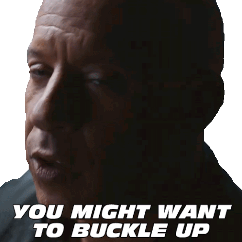
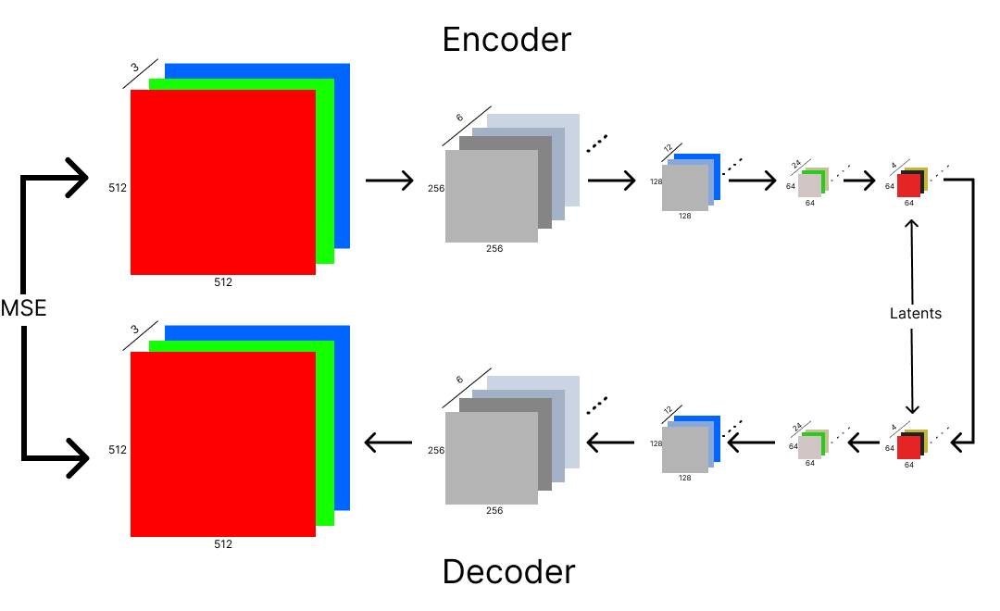
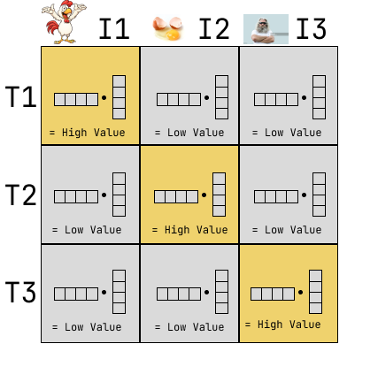
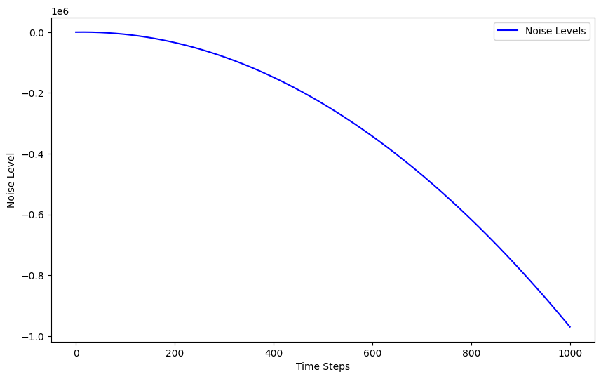
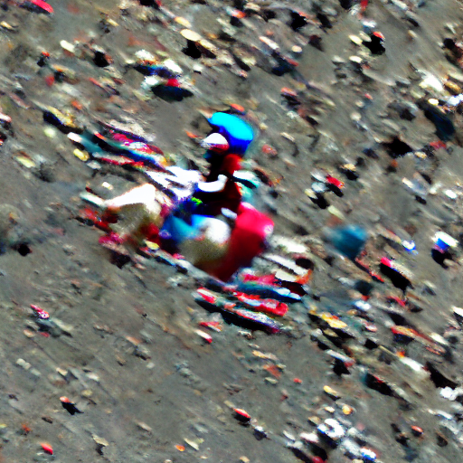

flowchart LR
I1(X1) --> F((Magic Function))
I2(X2) --> F
I3(X3) --> F
F --> O1("P(X1)")
F --> O2("P(X2)")
F --> O3("P(X3)")
About this blog
This is my first ever blog and it’s on a topic I find relatively hard, although I’ve tried my best to be accurate in whatever I write, It won’t be surprising if this entire blog was riddled with inaccuracies and straight up incorrect stuff. I simply don’t have that necessary but aquired oversight yet. So I’m asking the reader to help me out with any errors they might spot and I’ll happily correct whatever it is that I presented wrong.
1 Introduction
Most people reading this have probably heard of image generation at some point in time. If you’re among those who haven’t, then this journey will be even better as I go in some fair detail to try and explain what it is.
If at any point, the things I talk about seem hard, don’t be discouraged as it’s more of a shock if you find this easy to read. Nevertheless, buckle up because although we might not go all the way into the deep-end (I don’t know enough stuff yet), I think we’ll still get to dip our toes.

2 Cool AI generated images
I’ll just let the images speak.
All of the above were generated with simple but detailed text prompts. # Understanding the problem
Caution
This blog and deep learning in general have the tendency to contain lots of technical jargon. It might be something stupidly simple once you actually learn what it is, but for some reason the DL community likes cool names I guess. In case you’re a bit rusty with some of the terms, I’ve defined most used in this blog.
Jargon
| Term | Meaning |
|---|---|
| parameters | The values in the model that change what task it can do, updated through model training |
| architecture | The mathematical function that we pass input data and parameters to |
| model | The combination of the architecture with a particular set of parameters |
| gradient | A Tensor that tells us how the vector field changes in any direction |
| loss | A measure of how good the model is, chosen to drive training via stochastic gradient descent |
| metric | A human readable way to measure the performance of a model |
| CNN | Convolutional Neural Network; a type of NN that works well for computer vision tasks |
| embeddings | A relatively-low dimension space into which we can translate high-dimensional vectors |
| latent | A latent is a compressed, rough representation of a higher quality image. It consists of the most important features of an image |
| latent space | A feature or embedding space where similar embeddings lie close to each other, and different farther. |
| noise | Random variation of brightness or color information in images |
| U-Net | Deep Learning architecture used for classifying each pixel in an image into a category or class |
| VAE | Variational Auto Encoder |
| CLIP | Contrastive Language-Image Pre-Training, a visual classification NN |
| multimodal learning | A type of learning where the model is trained to understand and work with multiple forms of input data |
If you had to make a guess about how image generation works, what would that guess be? Think for a moment. If you’re like me, then you probably thought that we try to get the model to spit out cool looking images, right? Well, not exactly. Bear with me for a moment.
Imagine a magic function that takes in images of handwritten digits as inputs and spits out the probability that the input is a digit.
Let the probability be \(P(X)\) for an input Image X.
Wait. How do we use this function to generate new digits?
We do the following steps:
- Try making a pixel of X darker and then check the output probability
- Try making a pixel of X lighter and then check probability
- Do this for every pixel in X (If X is a 28x28 image, that’s 784 times!)
In the above steps, we’re calculating the change in probability of the images being handwritten wrt. to each pixel in the image (784 for a 28x28 image), mathematically it can be represented as follows: \[\nabla_X P(X)\]
Note
\(\nabla_X P(X)\) is itself a vector of size 784.
Next step we do is to multiply \(\nabla_X P(X)\) with some constant. \[c*\nabla_X P(X)\]
Now we subtract the above term from the 784 pixel values of \(X\) and in turn increase the output probability, and we do it a bunch of times.
flowchart LR
I(X) --> F((Magic Function))
F --> O("P(X)")
O --> G["c * ∇ₓP(X)"]
G --> S["-"]
S --> I
Having gone through all that, it would be an intelligent guess to say that now all we need is for someone to give us the magic function so we can start generating.
But there’s some bad news, nobody is going to hand us any magical function that takes care of everything under the hood. We’re going to have to train our own neural network on a lot of handwritten data to do this for us.
Seems simple enough to do for any seasoned DL practitioner. Alas! There’s a catch. Now I don’t know the why or how, but smarter people than me figured out that it’s pretty much practically impossible if not insanely hard to create a metric that tells us how much our image looks like a specific digit.
Important
Don’t forget that our end goal is making super pretty images like we saw at the start, not some basic digits.
So, they decided on an interesting but very logical approach.
3 An attempt at a basic image generation model
Every image we train on can be overlayed with some random amounts of noise, the result would be a noisier image of course but now we have some place to start with.
Noisy Image = Noise + Clear Image
Wkt we can’t predict how much an image looks like something, but turns out we can try and predict how noisy an image is, and then using basic arithmetic we can see that we’d just have to subtract that predicted noise from the noisy image to end up with a relatively clear Image.
Passing in a starting pic and repeating this over and over would train our model to get good at predicting the noise in an image and getting rid of it.
And once it has trained over enough inputs, it can generate new images for us because it now knows how to denoise inputs.
So we can use a model that works roughly in the fashion shown below:
flowchart LR
I["Input Image"] == "(1)" ==> M(("U-Net"))
M == "(2)" ==> O["Predicted Noise"]
O == "(3)" ==> Z["Subtracted from"]
Z == "(4)" ==> I
I == "(5)" ==> nI["Less noisy image"]
nI == "(6)" ==> M
Although the model above is decent, it can be optimised further using the concept of guidance. I’ll explain.
Currently, at the start of the training process, we’re leaving our model in the dark really with no clue about what digit it’s supposed to identify since we’re passing in somewhat noisy inputs.
Say our model knew what it was supposed to look for, wouldn’t it make logical sense then to pass in that thing? That’s what guidance does. Along with the input (obviously), we also pass the digit our model is supposed to remove noise from.
Now once the model is trained, guidance would help generate better new images, because it can denoise better! Duh. So our current model would actually end up looking more like:
flowchart LR
I["Input Image"] == "(1)" ==> M(("U-Net"))
G["OHE Guidance Vector"] == "(1, 6)" ==> M
M == "(2)" ==> O["Predicted Noise"]
O == "(3)" ==> Z["Subtracted from"]
Z == "(4)" ==> I
I == "(5)" ==> nI["Less noisy image"]
nI == "(6)" ==> M
4 Problems with our basic model
If we were living in the 90s, the model we built would certainly grab a lot of attention and maybe fame, but we’re not. We have overlooked some very grave issues.
- We’re not working with tiny \(28x28\) pixel images of handwritten digits here, we’re working with \(512x512x3\) (High quality RGB) images.
- Each of our 9 handwritten digits can be one-hot encoded into a vector but beyond that, we can’t one-hot encode infinite possible texts.
Note
Try one hot encoding any phrase of your choice. It’s hard.
Well then, is our case hopeless here? Were the images I showed faked? No, for we have the VAE autoencoder and the CLIP multimodal encoders and decoders to the rescue. Let’s understand what they are and get into how they solve both of our problems.
4.1 VAE: Variational Auto Encoder

In the context of our model, VAE is just a data compression and decompression algorithm with a fancy name.
VAE tries that what came in as input is the same as what comes out, it’s architecture might look similar to U-Net but VAE does not have cross connections unlike the former and VAE is also an autoencoder.
The special thing about autoencoders is that they can split in half and we can just use the encoder and decoder seperately.
The encoder serves as a great compression method and on the \(512*512*3\) example it reduces the pixel count from \(786,432\) to a mere \(16,384\). A size reduction of \(48\) times.
Important
The encoder peforms compression by doing stride 2 convolutions and doubling the channel size, this helps in increasing the complexity and expressive power of the model without increasing the spatial feature maps.
So, a stride 2 convolution reduces the spatial dimensions and memory usage and additional channels give the model more capacity to learn.
And if we have a copy of the decoder, we can feed the encoded latent to it and end up with the high resolution image again.
This model serves a great compression algorithm because it’s been trained on millions upon millions of input images, at the start of its training process, the VAE spits out random noise out of it’s decoder but if we use the humble Mean Squared Error function on the encoder input and decoder output to train the VAE reduce the loss.
How it works is interesting though. VAE, is built up of two main components and each of them can work independently once the autoencoder has been trained.
The first part consists of the Encoder. This is where compression happens, we start with a high resolution image of \(512*512*3\) and keep performing convolutions of stride 2 and doubling the channels till we end up with a relatively much lower dimension image. This image is called the latent and the multi-dimensional space it exists in is called the latent space.
Note
A latent contains the most interesting and useful information of an image.
A channel in a CNN refers to a specific component of the image data, in the case of a colour image, the channels typically represent different colors.
A feature in CNN refers to specific characteristics or pattern in the input data that the network learns to recognise. These patterns can be simple or complex, early layers of a CNN features are basic patterns and deeper in the network, they’re more abstract and complex.
Note
A stride two convolution means that at each step, the convolution skips a column and a row. So for a \(4*4\) grid, a stride 2 convolution would bring the size down
flowchart LR
A["High Res Image"] --> M(("VAE Encoder"))
M --> O["Image Latent Tensor"]
Now let’s get back to what we need VAE for, the size problems our older model had. Since we can compress image sizes by godly amounts, there’s no doubt, that we’ll train the U-Net model with these encoded images (latents).
So, if our U-Net needs to be trained on 10 million images, we’ll pass each one of them through VAE's encoder first, and then we feed these latents into the U-Net 100s to 1000s of times.
Caution
Don’t forget that U-Net denoises input images through repetition.
Now our model looks like this:
flowchart LR
I["Noisy Latent Tensor"] == "(1)" ==> M(("U-Net"))
G["OHE Guidance Vector"] == "(1, 6)" ==> M
M == "(2)" ==> O["Predicted Noise"]
O == "(3)" ==> Z["Subtracted From"]
Z == "(4)" ==> I
I == "(5)" ==> nI["Less Noisy Latent Tensor"]
nI == "(6)" ==> M
Wouldn’t this new latent based model spit out latents too? Yes, it will but we don’t forget that we also have the other half of our autoencoder. The VAE decoder will be able to take in the generated latent as input and then output a high resolution image. It’d be like there wasn’t any compression-decompression to begin with.
flowchart LR
A["U-Net Output Latent"] --> M(("VAE Decoder"))
M --> O["High Res Version of Generated Image"]
Technically we don’t need to use an autoencoder, but it greatly saves on computation necessary and the time it takes to generate an image as well as the modern training itself.
Note
VAE encoder: Used during model training.
VAE decoder: Used during model inference.
4.2 CLIP
Ignore the weird name for now and focus on the second problem we had. Which was, finding a way to create embeddings for any possible text and not just the digits b/w 0 to 9 so we could guide the model.
What if we had a model that spat out a vector representation of every complex sentence, such that we could pass it with our latent tensor as guidance. And what if, that model created textual embeddings in such a way, that they ended up being close to the latent tensor’s embedding in the latent space.
My personal intuition for this, could be wrong.
If the above paragraph was hard to get, I can explain with a more grounded example. I’m aware that the human brain and neural networks are not at all the same in the manner with which they function, and are designed but I couldn’t think of an easier example, so bear with me.
Imagine a guitar with a few broken strings, after reading this text could your brain think up of an image showing the same? It might not be super clear, 4k quality or something, but you could in your head think of an image that had the most important features that a guitar with a few broken strings might have.
I think that a latent space is just that neural network analog for that headspace we go into. Our brain was able to process and break-down the text and then also match it to a visual representation.
So we essentially need a model, that is capable of doing something similar to this in essence. CLIP is one such model that does this job.
CLIP is made up of two models. A Text-encoder and an Image-encoder.
flowchart TD
T["Input text"] --> TE(["CLIP Text Encoder"])
I["Input Image"] --> IE(["CLIP Image Encoder"])
TE --> VT["Vector Representation of Text"]
IE --> VI["Vector Representation of Image"]
VT --> LS(("Latent Space"))
VI --> LS
Both encoders need to be trained first with randomly selected weights. The ‘CL’ in CLIP stands for contrastive loss and that’s what helps in training both the text and image encoders. Fancy name apart, training process is quite simple.
Let’s take three random text prompts:
Text 1: Muscular Hen’s caricature
Text 2: Broken Egg
Text 3: Senior man with long hair and beard portrait
We’ll call the vector representation of each text prompt as T1, T2, T3 respectively.
We also now have 3 images of the same, and we’ll use I1, I2, I3 to represent the vector representations of these images. All of these vector representations were generated by throwing them into the CLIP encoders (and they’re random right now because we haven’t trained CLIP yet).
Now, we can make a grid with the Image vectors lined up along the columns and the Text vectors lined along the rows.

Each cell of the grid contains the dot product of the two representation vectors. The dot product of vectors that actually describe an image with the right text will be the highest, i.e. of the diagonal cells.
The non-diagonal cells on the other hand, should have low values once the model is trained, because the embeddings are far apart from each other in the latent-space. The text representation vector is not correct for the image.
Now as the final step, we sum up all the diagonals together and we also sum up all the non-diagonals separately.
- \(Sum_d = \text{Sum of Diagonals}\)
- \(Sum_nd = \text{Sum of Non-Diagonals}\)
- \(Loss = Sum_d - Sum_nd\)
The loss function is known as Contrastive Loss, and it should be zero if all our generated embeddings are perfect matches.
So, to conclude this section. CLIP is a multi-modal model as our embeddings all share the same space and it helps us solve our second problem of not having a way to create embeddings for complex text.
5 Updated Model
flowchart LR
I["Noisy Latent Tensor"] == "(1)" ==> M(("U-Net"))
G["CLIP Generated Embedding"] == "(1, 6)" ==> M
M == "(2)" ==> O["Predicted Noise"]
O == "(3)" ==> Z["Subtracted From"]
Z == "(4)" ==> I
I == "(5)" ==> nI["Less Noisy Latent Tensor"]
nI == "(6)" ==> M
Now our model can take any image as input with any arbritarily complex text describing what the image is about and our model would be able to use that as guidance to denoise input latents better.
And what about generation? For image generation, our model could take as input any random bits of noise and convert that noise into something that matches the text embedding by using the feature vectors of the very same embedding.
This model could serve as the final one, but in practice stable diffusion has one extra implementation detail that we haven’t discussed yet. It’s called Time-Steps.
6 Time-Steps
To start off, time steps has nothing to do with time. It’s just an overhang from the math of the first few papers written on stable defusion.
It’s just a method of generating random noise for the inputs we pass in to our model. The noise used is varying and the noise schedule is some monotonically decreasing function.

The algorithm to pick noise is:
- Randomly choose a number b/w 1-100
- Look at noise schedule for that number.
t=1 has a lot of noise, 1000 has the least. So the time-step t is pretty much telling us how much noise to use.
How is this used in practice? Well, we generate noise using the 2 steps above for each image in our mini-batch and we add that generated noise to each image in the mini-batch respectively.
Note
These days, it’s widely accepted that the addition of noise to input images using time-steps in stable-diffusion impacted the quality of the generated images negatively and it’s not used in newer diffusion models.
7 Concluding QNA
How does whatever we did above tie in with the first equation we had?
Some Noisy Image - \(c*\nabla_X P(X)\)
- What would the value of \(c\) be and is it similar to learning rate?
-
Ans. The value of \(c\) depends on the diffusion sampler we use and yes \(c\) is kind of like a learning rate.
- Why can’t our model jump to the best image in one step?
-
Ans. Because things that look weird and hideous like the image below don’t appear in our training set, and our model doesn’t know what to do with them.

Our model only knows how to deal with somewhat noisy images and that’s it. It can only denoise whenever it sees some noise.
That’s why we subtract just a bit of noise (hence the \(c\)), so that we are always left with some noisy latent.
8 References
- fastai practical deep learning for coders